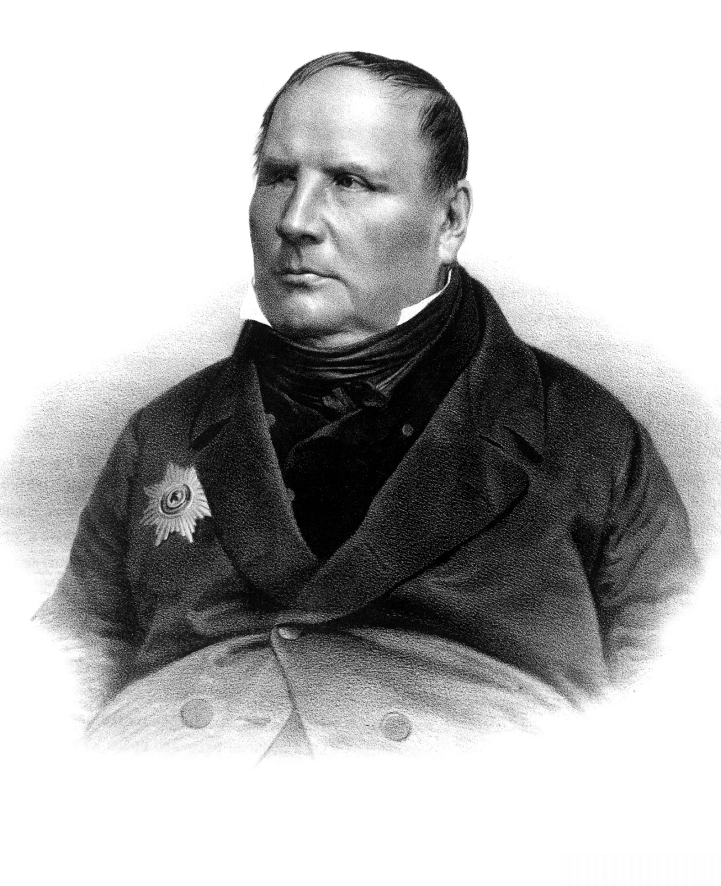

Михайло Васильович Остроградський народився 24 вересня 1801 року в селі Пашенівка на Полтавщині (нині Козельщинський район). Він походив з давнього українського козацького роду. З раннього дитинства майбутній вчений виявляв неабияку допитливість, проте справжню пристрасть до точних наук відчув під час навчання в Полтавській гімназії, а згодом — у Харківському університеті під керівництвом видатного професора Т. Ф. Осіповського.
У 1820-х роках молодий дослідник вирушив до Франції, щоб продовжити освіту в Паризькому університеті та Колеж де Франс. Там він слухав лекції таких світил науки, як Огюстен Коші, П'єр-Симон Лаплас та Сімеон Дени Пуассон. Перебуваючи у Франції, Остроградський опублікував низку блискучих наукових праць із гідромеханіки та теорії пружності, які привернули увагу європейської наукової спільноти.
Повернувшись до Російської імперії, Михайло Остроградський оселився в Санкт-Петербурзі. Тут він активно займався не лише науковою роботою, а й викладацькою діяльністю у провідних вищих навчальних закладах, зокрема у Головному інженерному училищі та Морському кадетському корпусі. Його лекції вирізнялися надзвичайною логічністю, глибиною та яскравою практичною спрямованістю.
Найвидатнішим досягненням вченого стало відкриття фундаментальної формули зв'язку між потрійними інтегралами та інтегралами по поверхні (теорема Остроградського — Гаусса), яка нині є базовим інструментом у математичній фізиці та векторному аналізі. Крім того, він зробив вагомий внесок у розвиток варіаційного числення, теорії теплопровідності та балістики.
Михайло Остроградський помер 1 грудня 1861 року в Полтаві, але його наукова спадщина випередила час. Сьогодні його ім'я стоїть в одному ряду з найвидатнішими математиками світу.
Я захоплююся ним, тому що він був розумним, працьовитим і відданим науці. Його досягнення показують, що освіта, допитливість і наполегливість допомагають людям робити важливі відкриття та сприяти розвитку науки.
Наукова спадщина
Головні напрями та результати діяльності видатного математика:
Основні галузі досліджень:
Математичний аналіз і диференціальні рівняння
Аналітична механіка та гідродинаміка
Теорія теплопровідності твердих і рідких тіл
Створення потужної петербурзької математичної школи.
Міжнародне визнання: обрання членом Паризької, Туринської та Римської академій наук.
Цитати
«Нудьга — це найнебезпечніша отрута, людину воднораз трудно вивести із стану лінивства, неробства, самовдоволення і майже повної байдужості.»
— Михайло Остроградський
«Наука вимагає від людини цілого життя, але й дає їй взамін найвищу радість пізнання і творіння.»
— Михайло Остроградський
«Головна мета викладання полягає не в тому, щоб заповнити пам’ять формулами, а в тому, щоб навчити людину логічно і самостійно мислити.»
— Михайло Остроградський
«Точні науки відкривають розуму світ непохитних законів, де кожна істина доводиться працею і терпінням.»
— Михайло Остроградський
«Працьовитість і непохитна наполегливість здатні подолати будь-які перешкоди на шляху до справжнього відкриття.»
— Михайло Остроградський
«Освіта є найпотужнішим фундаментом, на якому будується добробут і майбутнє цілих націй.»
— Михайло Остроградський
«Кожен зроблений крок у пізнанні природи — це ще одна цеглинка у великій будівлі людського прогресу.»
— Михайло Остроградський
Фото

Портрет видатного українського математика Михайла Остроградського

.jpg)